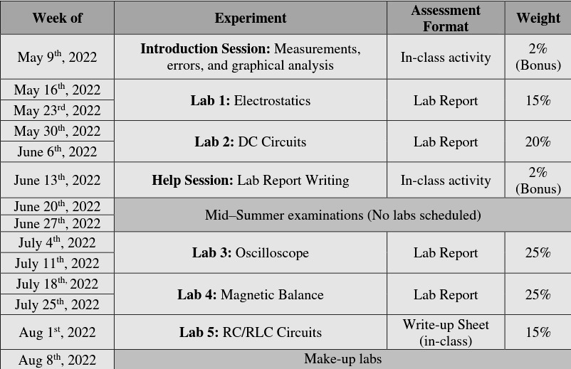
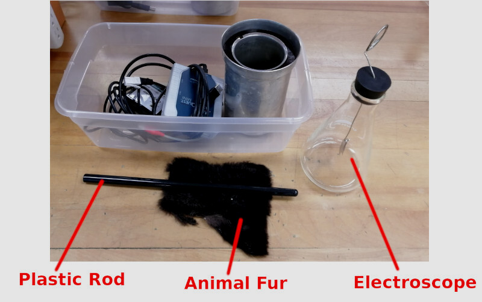
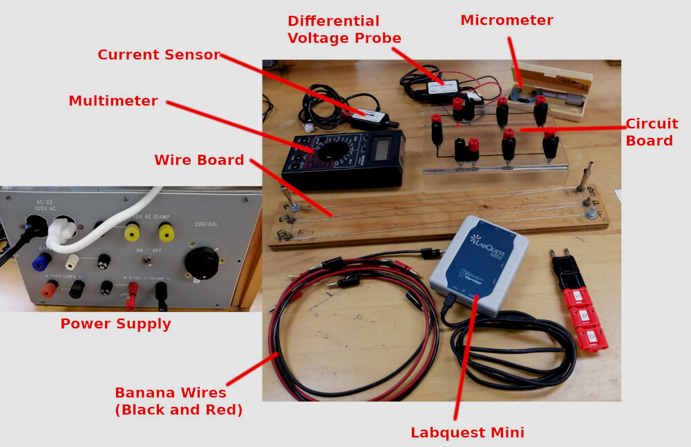
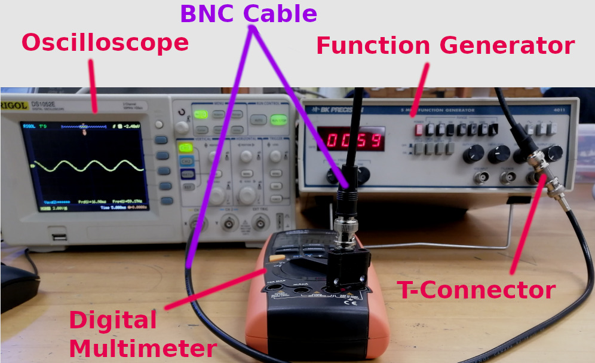
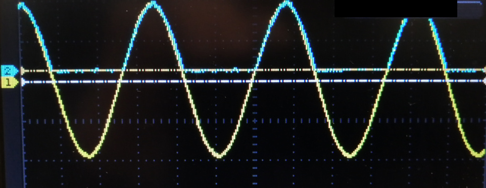
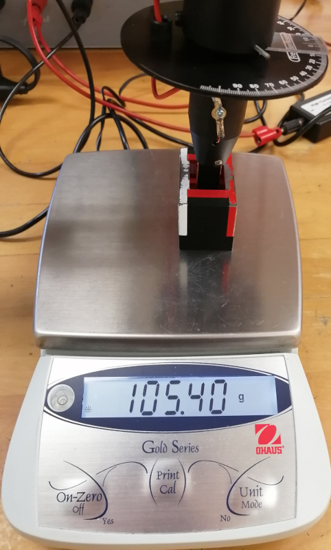
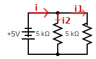
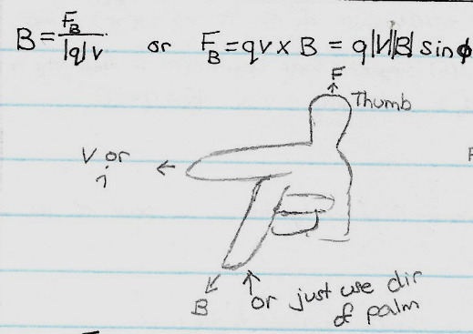

TLDR:
- Be comfortable with Math
- Labs take a lot of effort and time
Professor: Mustafa Bahran
Lab Supervisor: Maria Paula Rozo Martinez and Jesse Lock
Course Delivery: In-Person
Class Size: About 80 students
Semester: Summer
Description: This calculus-based course introduces potential energy, work, electricity, magnetism, oscillations and waves.

Note: Please feel free to submit a bug report (link is above, just below the title) about anything incorrect what I am saying. I will admit I do not know introductory level Electromagnetism very well
Review
Mustafa Bahran is an enthusiastic professor who loves Physics. He expresses his love for Physics way more than my previous Physics professor by a long mile (are all Physics professors in love with Physics?). The course requires knowledge of Calculus such as integration and be comfortable with Math. While there are no crazy integration needed, you should know enough to not be scared of seeing integration on the board. There’s no need to know integration by parts and integration by substitution. I want to stress again, you only need elementary exposure to integrations for this course which is similar to PHYS1001 - Foundation of Physics I that I took in the fall semester. If you did fine in the previous course, you have enough Math knowledge to do well in this course. As a confession, the view of integrals made me scared for an entire month despite being a Math student (it brings back memories of how bad I was at integration).
The course follows closely to the textbook, Fundamentals of Physics by Halliday, Resnick, and Walker where the lectures slides and interactive lecture questions are from the textbook publisher. The course covers 13 chapters starting from Chapter 21 - Coulomb’s Law to Chapter 33 - Electromagnetic Waves. For each chapter, there is a pre-reading quiz that was worth 15% of your grades. The professor decided to only take the top 10/12 pre-class quizzes out of kindness. Pre-lecture quizzes is essentially to ensure that students have read the chapter before going to lectures. It is just concepts questions from my memory so no need for a calculator (though I could be wrong). I eventually got lazy reading the textbook to the point where I just download the lecture slides and open the eTextbook to quickly find what I needed. However, this did affect my understanding of the material greatly which is why I feel like I don’t know anything which the exam made very apparent. A tip for the pre-reading quizzes is that you should attend lecture and start the quiz after the lecture. Although this defeats the purpose of the pre-lecture quizzes, if you want to maximize your grades, read the summary of the topics in the chapter, attend lecture to understand the material (if the course schedule happens to align with the topic), and then do the pre-class quizzes after the lecture when things start to make sense.
There are 6 assignments in the course that was to be submitted online. These assignments do take quite a bit of time as all physics assignment do. So don’t start on the day it’s due but a few days before so you can have time to try out some questions and think about it. Sometimes the professor likes to solve 1-2 questions from the assignment during lecture so showing up to lecture would help you a lot. You have two attempts for each assignment so what I do is try my best to answer on the first attempt which usually ends up not good. ‘Reverse-engineer’ the problem from the solution (only final answer is given) or do process of elimination if it’s a multiple-choice questions. Sometimes though, you just punched in the wrong numbers in your calculator so it’s great to have two attempts.
The way Physics courses are structured is that you must attend and complete all 5 labs which make up 35% of your final grade. The condition for passing the course is to fulfill the following two conditions:
- overall mark >= 50%
- must achieve >= 40% on BOTH theory and lab components of the course
These conditions are reasonable and definitely achievable for the average student. The theory component of the class is the final exams (25%) + pre-class quizzes (15%) + assignments (25%) which make up 65% of your overall mark. There was no minimum mark required for the final exam and thank goodness there wasn’t. Since the professor could not procure marking TAs for the course, the exam was all multiple choices which is either a nay or yay depending on who you are. Statistically speaking, you have a 20% chance of getting any of the 35 questions on the exam correctly. But it is also scary because you have an 80% of getting the answer wrong and there are no part marks. I’ll be honest, I have absolutely no clue what I was doing in the course as I gave up on the course early on. I still did the homework and quizzes and attend all the lectures. But I did not put in the effort required for typical Physics courses and was contemplating downgrading my Physics major to a minor to focus on Math instead (which I am tempted to do still). It’s not that the professor was bad, in fact, he is a very passionate and good communicator. But the subject doesn’t spark huge curiosity inside of me nor does it make me think I have a future in the subject. Physics is just so time-consuming and hard that I wonder if it was worth the effort.
This course has 3 hours lectures + weekly readings every week for the lecture component of the course with an assignment every two or so weeks. Meanwhile, the lab component takes 3 hours biweekly with prelab quizzes and a lab report. I know from experience with PHYS1001 and other science courses that it can take much more time than that with post-lab quizzes and tutorials every other week. Sciences just require a lot of diligence that I do not know if I have the energy to invest in. However, I do not think I am wasting my time taking this course at all. The entire purpose of coming to University is to learn and I am definitely learning a lot from my courses. Which is why I am not entirely upset of the course but I feel like I should have placed more effort into the course.
Enough ranting, the exam allowed you to bring a double-sided cheat sheet with anything you want. But to be honest, I wish I didn’t even put in the effort to write a cheat sheet and just brought a formula sheet instead of writing my own which I finished an hour before the exam. Mustafa does not like calling the sheet a “cheat sheet” because it is not cheating and is more of an aid sheet. Whatever I had in my cheat sheet was completely useless to the exam that I should have just played around if I wasn’t going to study for the exams. In fact, if I just read my course notes using the time I spent writing my cheat sheet, I would have likely gotten a way better mark as I would be spending the time studying. During the exam, there were a few questions I recognized and wished I just read my course notes instead because I knew exactly which page it was in my course notes.
I wish I went into the exam with the same attitude instead of writing my cheat sheet the night before. From the anime Seishun Buta Yarou wa Bunny Girl Senpai no Yume wo Minai
Mustafa Bahran was kind enough to drop the 5 worst questions so the exam ended up being out of 30 questions which made me able to pass the exam with over 50%. I definitely could have done better because whatever my final mark is, I do not think I deserved it because I do not have a good understanding of the course.
As I stated earlier, there are 5 labs in the course with a few chances to earn bonus marks in the lab component. The first bonus assessment was a worksheet on measurements and experimental uncertainties along with fiddling with Logger Pro. This is a good introduction and review to students on how to report measurements and their uncertainties and give students an idea of what they look for when we submit our Logger Pro files (i.e. title, axis, error bars and etc). The second bonus activity was to critique and grade a sample lab report which gave students an idea of what to avoid and what a lab report should look like. The weights for each lab were purposely assigned such that the first lab weighed less than the next one and etc to not penalize students too much as they get used to writing lab reports for this course. Since the last lab was in-person, the weight for the final lab weighed the same as the first lab since students could not get time to work on the lab at home. At least that was what was supposed to happen but I think we got over 20 hours after the lab to submit the lab worksheet online which was nice of Maria to do.

The lab schedule along with the weights of each lab
As you can observe, there is a make-up lab scheduled at the end of the semester to let students who missed a lab due to unforeseen circumstances a second chance to do the lab they missed. Each lab comes with a pre-lab quiz to ensure the student has read the lab manual and understands the concepts of the lab and what they need to do for the lab which is due right before the lab starts. Labs take a lot of time to write so I suggest writing the introduction and procedure either on the day or the day after conducting the lab and scheduling yourself to finish a certain milestone because you only get one week to write the lab. I probably spend around 20 hours or more writing each lab report so it’s a significant amount (I never timed myself so I am just guessing right now). I suggest writing your lab reports using LaTex (i.e. Tex) because it makes your lab reports look very nice with citations done for you using BibTex. You can also add hyperlinks throughout your lab report which makes the report not look professional but easy to navigate. Though I do not know if my TA ever noticed this. Using MS Word works but I completely gave up using Windows and MS Word in the summer of 2017 after my extremely slow laptop died and my lab report got corrupted resulting in me getting a 0% on the lab. Hence why I only use Latex to write lab reports and Linux as my daily driver.
The first lab is about electrostatics. More specifically, the experiment involves using induction to separate the leaves of an electrically neutral electroscope by bringing a negatively charged rod towards the electroscope. You will also be measuring the charge of the rod using an electronic charge sensor. I will not go much more about the lab, you can find out yourselves by taking the course.

Part of the apparatus for the elctrostatics lab
The second lab is where you are introduced to DC Circuits if you are not already familiar with them. The lab contains two parts: observing Ohm’s Law by measuring the current by varying the voltage and measuring the resistivity of the wire to determine the composition of the wire.

The apparatus for the second lab
The third lab was the most interesting lab in the course. The lab involved understanding the behaviors of an AC to DC Circuit through an oscilloscope. An AC signal is a sinusoidal wave that can be observed through an oscilloscope which is an instrument that measures the potential difference across time to draw waveforms of the input. Unlike a DC (Direct Current) where current flows in one way, AC (Alternating Current) has the flow of current alternating directions. AC is the signal (current) that is transported through the electrical grid to your outlet/sockets. For your device to utilize the power from the socket, it needs to convert AC to DC through an adapter. THe lab explores a half-wave rectifier which I won’t explain as to why it’s called that way. While performing the lab was not fun and I was frustrated using these electrical equipment for the first time, I had fun writing the lab report because of what I learned while writing the lab report. It’s very magical how much you learn from writing lab reports. As much as I hate writing lab reports, I always learn a lot from writing lab reports. This lab lets you explore the function of the capacitor, resistor, and diode by fiddling around with the voltages and removing the diode from the circuit. This lab is probably the only lab I have done so far where I felt textbooks and lectures will do a poor job in explaining what is going on. As a word of caution, this lab is extremely time consuming and a lot of students including myself had to redo the data collection in the next lab and were given a 48 hour extension to submit the lab. It’s a very tedious lab to perform but it sure was rewarding. Thanks to Jesse for being kind and giving us an extension to those of us who needed it.

The apparatus for the third lab

An example of one of the waveforms observed during the lab
The fourth lab was mind-boggling lab. The 4th lab explored the effects of length, current and angle of orientation of a current-carrying conductor on the magnetic field. This lab involved a lot of fiddling to change different dependence variables. I also conducted a few extra other tests to confirm my suspicion on the results I was observing (hint: fringing if you know what that is). What was mind-boggling was the fact that we were measuring changes in the mass of the system in different configurations. For instance, rotating the angle of orientation of a coil wire changed what the electronic mass sensor was detecting. The effective mass changed simply because the coil of wire was rotated. This shocked me a lot and I had a hard time understanding the Physics behind this phenomenon.

An example of how the coil of wire and magnet looks like
The last lab as I stated earlier was a worksheet that had to be filled out and submitted 20 hours or so after the lab. This lab wasn’t difficult to perform but it wasn’t interesting either. The lab was straightforward and it involved observing the waveforms of an RC and RLC circuit to measure the time constants of each circuit.
The lab had two coordinators: Maria and Jesse. Maria ran the first two and the last lab while Jesse ran the third and fourth lab in the course. Both are equally as good at instructing students what the objective of the lab is, the theory and how to perform the lab. Both lab coordinators and the lab TAs were super helpful and I often found myself asking questions to ensure I knew what I was doing or understanding the theory correctly.
Unlike PHYS1001, PHYS1004 labs are a bit shorter (mine were about 15-20 pages for this course) because the theory section did not require us to dive deep into the theory and derive each and every equation. The interesting thing about PHYS1004 is the requirement that a practical application of the theory is to be shared under the discussion. I guess it really is a physics course for engineers because I did not have to do that for PHYS1004. But perhaps PHYS1002 did require that but I did not take the course as I was working that semester. While I did not get 100% in all the labs, I was quite close to getting 100% in all my lab reports and pre-lab quizzes. The bonus marks is what allowed me to get 100% in the lab section and I do think my lab reports were very well written. I have put a lot of effort writing my lab reports in both PHYS1001 and PHYS1004 so I am satisfied with the marks.
Course Description (Long Commentary)
The course covers Electromagnetism which is the study of the interaction of charged particles in an electromagnetic field such as the electric field and magnetic field. The course begins with discussing Coulomb’s Law which is the electrostatic force between charges which looks oddly similar to Newton’s Law of Gravitation except that Electrostatic force is not always an attractive force (i.e. can be a repelling force as well):
\[\begin{align*} F_G &= G \frac{m_1m_2}{r^2} \\ F_C &= K \frac{q_1q_2}{r^2} \\ \end{align*}\]In this chapter, electrostatic force is discussed such as what happens when a glass rod is rubbed with silk or cat fur is rubbed with a plastic rod (i.e. triboelectric series). Also discussed is the interaction (induction) of charged rods brought near a sphere such as a pith ball (i.e. does it attract or repel).
The next topic discussed was Electric Fields which is a vector field that surrounds charged particles and exerts some force on the particle either repelling or attracting charged particles. This is where field diagrams are first shown in the course and in Physics in general (I do not think students are shown gravitational fields in the previous course at least I do not recall being taught about it). Fields are just a visual representation of both the direction of some force (electric in our case) and its strength in a region. The denser the field, the stronger the field is and vice versa.

An example of how a field looks like
As you can see from the image above, the electric field lines extend away for positively charged particles while the electric field lines go towards negatively charged particles where they terminate. Other facts, about the electric field is that field lines cannot intersect each other. This chapter (chapter 22 - Electric Fields), is where charge distributions are also covered. Previously, when discussing about electric fields, we were talking about point charges but what if you have an object and not some point charge such as a rod where there is more than one dimension such as a height and width. This is what we call continuous charge distribution but don’t quote me the actual physics behind whatever I say in this review. Based on my personal reflection and how the exam went, I clearly do not know what I am saying nor learned, unlike Math where I feel like I have a good grasp of the subject. This is where the importance of integration comes into the stage. There are three types of charge densities: linear, area, and volume which you can probably tell what they mean and when to use them in the course. I felt very intimidated (if that’s the word that means scared) in the course. In hindsight, it probably wasn’t too hard. My negative feelings toward Physics probably clouded my mind despite choosing to study Physics when I didn’t need to. One of the greatest advantage Physics has over different STEM programs is that it’s interdisciplinary. Physics intersects with Math and Chemistry so you get to understand the concepts in a different light. In terms of purity, Math is always the purest subject as it intersects every realm of discipline which I have mentioned in my course review for PHYS1001.

XKCD illustration on how Math intersects all different types of disciplines
The issue with Math as a subject is that you do not get to see the practical application or usage as visibly compared to Physics. Yes it is very interesting to learn about Riemann Integrals, Darboux Sums and
the proof behind them. But students are probably wondering what is the use of learning about the theory. Well in Physics, you can see some sort of application (even if it’s so low level that in practice, there are
probably easier ways to think about these or we don’t think about them. At least that is what I assumed but I ain’t an engineer nor am I knowledgeable about Physics). The reason why I bring this up is that
the professor made me recall what it really means to take an integral. When calculating the electric field of an extended object at a point, there are two main steps to consider:
- Consider the electric field set up by a charged element dq in the object
- Sum all the charge elements via integration
This probably won’t make sense to you at all (neither to me tbh). But I hope the image below illustrates what is fascinating about this topic:

Adapted from Physics LibreText
In figure (a), you can see that we take some small charge differential element dl and sum dl from 0 to the length of the line. Similarly, for a sheet of charge, we sum an area dA throughout the entire sheet. This is a good illustration of what integration is. It’s a sum of some elements throughout the object. Often when integration is taught, we think in terms of the area underneath the curve by taking very very very small areas of rectangles that are so small that it gives us the area under the curve. If you have taken MATH1004, I believe you learn about taking the volume of solids of revolution so the idea that integrals can also calculate volume should not be too surprising at all. But it’s been so many years since I had to take into account the volume of some object using Calculus (i.e. like 6-7 years).
One of the key things you should have taken from the previous calculus course is the power of symmetry. Symmetry can simplify our math a lot such as canceling the vertical or horizontal components which is shown in figure (d). Anyhow what made me interested somewhat in this topic is when Bahran showed how to calculate the electric field for a charged disk. The differential element dr is just a ring. I do not know why this fascinated me but it might be because that I always took differential elements in my mind as non-circular objects such as a rectangle or a cube. But the idea of adding a bunch of differential rings of different sizes from 0 to R just was beautiful. Though I guess this is another way of thinking about integration because taking the area of circular object with a rectangle whose width approaches to 0 will still work.
Another topic covered in the chapter is learning about the direction of the electrostatic force in an external (non-uniform?) electric field such as a dipole (two opposite charges separated by some distance). This is where the topic of torque from what you learned in the previous course comes in. When a dipole is in an external electric field, the dipole will rotate until it aligns with the field and from this, you can also calculate the potential energy associated with the dipole moment. Interestingly, to calculate torque, you may have recalled that it is the cross product but when calculating the potential energy, it’s a dot product which is the opposite (i.e. one uses $\sin\theta$ while the latter uses $\cos\theta$). Talking about math, one of the interesting relations in Physics is the inverse square law which appears so many times in the physical realm such as in the universal law of gravity (which I believe it’s technically a Law) and in electrostatic which I showed previously. You will see this again when learning about the intensity (power per unit area) of radiation in the last chapter.
The third chapter covers Gauss’s Law, presumably named after Carl Friedrich Gauss who is a very famous Mathematician that you’ll hear come up in math and physics. Gauss’s Law relates electric field at points on a closed Gaussian surface to the net charge enclosed by that surface. Gaussian surface is some fictitious surface that we use to calculate the flux of the electric field. Flux is the measure of the field on some surface (i.e. the rate of flow) and is denoted as $\Phi$ (Phi).
Recall the discussion about the direction of the electric field lines going towards negatively charged particles and outwards for positively charged particles. When talking about Gaussian surfaces, if the electric field lines are piercing inwards, then the charge is negative and similarly positively charged if the field lines are outward piercing.
This is where I probably started to fall apart in the course but I will try my best to describe what this chapter discusses. The following is Gauss’s Law (Math just explains it better than words, even professor Mustafa says the same thing):
\[\begin{align*} \epsilon_o \Phi = q_{enc} = \int E \cdot (dA) = EA & & \text{(if E $\perp$ dA)} \end{align*}\]The differential element is dA where A represents the area. One important thing to remember is that the area vector on a flat surface is perpendicular (normal) to the surface which is represented as $\hat{n}$.

The direction of the area vector is perpendicular to the surface. Adapted from Physics LibreText

A closed guassian spherical surface surrounding a point charge q. Adapted from LibreText
An interesting fact is that the electric field inside a conductor vanishes and any excess charge placed on a conductor resides entirely on the surface of the conductor which I think explains how Faraday’s Cage works. I probably should get along and talk about the next topic because this course overview will become too long (as evident from my MATH2107 Course Review which is around 57-73 minutes read). The next chapter is about Electric Potential (V) which is defined as the work that is done by the electric force on some test charge $q_o$ brought from an infinite distance to some point P. Do not worry if this does make sense right if you never taken the course (in fact none of these will make sense). Some topic covered is equipotential surfaces which are imaginary surfaces that have the same electropotential throughout the surface. Meaning at any point within the equipotential surface, the electric potential is the same. So any movement within the same equipotential does not produce any work. Recall how work is defined in the previous course. If energy is conserved, then no work is done if an object moves at any path if it starts and ends at the same point. Sounds weird but that is how it is defined because there are no dragging forces such as friction. In a closed system, no work is done if the charged particle moves within the same equipotential plane or if it moves out and back to anywhere within the same equipotential surface (regardless of its path). If there are differences in electric potential, this is what we call voltage which is a term a lot of people have at least heard before.
The next chapter (chapter 25) talks about Capitance which may or may not be familiar to you. These are often seen in electronics (or at least I recall seeing them on my 20+ year old desktop). A capacitor is an electrical device that stores electrical energy and is essentially two conducting plates with opposite charges. In this chapter, you will learn about capacitors for different geometries (i.e. spherical, parallel plates, and cylindrical) and capacitors with a dielectric material in between the plates (dielectric material is similar to an insulator but can be polarized i.e. have opposite charges). Adding a dielectric material in between the plates of the capacitors will increase the capacitance. You will also learn how capacitance adds up in a circuit if it is in series or parallel. Series just refers to the electrical circuit following a single path while parallel circuits have diverging paths (paths that split). An illustration would be helpful (I would like to thank LibreText for offering free textbooks. I wished I read this textbook while taking the course):

Capacitors in series. Adapted from Physics LibreText

Capacitors in parallel. Adapted from Physics LibreText
The next topic is current and resistance. Probably my favorite topic as it’s the only topic I think I understood relatively well. Current is defined to be the rate of charge passing through over time. I love thinking current as if it’s water inside a pipe. Here’s an exert from my lab report:
When thinking about a simple circuit, it is helpful to imagine a simple circuit being like a closed water pipe where the flow of water is analogous to charged particles (e.g. electrons) flowing through a wire. The rate at which charged particles travel in the wire is known as the current (units: A) and is analogous to the rate at which water flows in a pipe. What drives the flow of charged particles in the circuit is the power supply measured in voltage (units: V) which provides an electrical potential difference in the circuit. It is the “pressure” that makes the charged particles flow through the circuit. It is akin to how the flow of water increases if the pressure in the pipe increases. However, the total flow of current is not solely dependent on the electrical potential in the circuit but also with the resistance (units: Ω) present in the circuit
[...]
Going back to the pipe analogy, the differences in the size of the pipe affects the flow, so a higher resistance is akin to flowing water in a smaller pipe. - Observing Ohm’s Law through the Measurement of Current and Voltage in a Circuit and Determining the Resistivity of the Wire - By me
While the analogy may not be a reality, this is how I understood current and resistance. Since wires do get hot, it indicates that there is resistance in the wires. Every material has an inherent trait called resistivity and conductivity. You will learn that the resistance of a wire is dependent on the material itself, the length, and the cross-sectional area (where if you increase the diameter of the wire, the resistance decreases. It is as if you were having water flow in a wider pipe. While I do not know if this analogy is truly accurate, widening the wire I think would not only allow more current to flow (i.e. electrons) but also decrease the number of collisions that occur between the electrons as they drift/flow towards the positive terminal.
One weird caveat about the study of electronics is the fact that the convention of the direction of current is that we follow the direction of positive charges and not negative charges. It is very counter-intuitive because it is the “flow” of electrons that provides power to the circuit and not positive charges. However, that is the convention. The direction of current comes from the positive terminal of the power source to the negative terminal of the battery (or to the ground).
In this chapter, you will also learn the very famous law called Ohm’s Law which I guess may not be a law because it is not universal in the sense that Ohm’s Law does break if the material is not “Ohm’s material”. For the most part, any object we or at least what I will interact with directly will be an Ohm’s material meaning the relationship between voltage, and current will be linear. Ohm’s Law if you do not recall describes the relationship between voltage, current, and resistance.
The next chapter (chapter 27) is introducing what a circuit is and Kirchoff’s Laws which the textbook calls it Junction and Loop Rules). The chapter describes that not all batteries (or EMF - Electromotive Force) which isn’t a force from my memory) are ideal in the sense that they don’t have resistance. This means that every real source of power has some small internal resistance. This chapter is relatively straightforward and pretty much you just need to know that there is internal resistance in a power source and how to calculate resistance in both a parallel and in a series circuit which happens to be the opposite of how capacitance is added. The way to add resistance is described by two laws of Kirchoff (i.e. voltage and current law). Kirchoff’s current law (also referred to as junction rule) states that the amount of current flowing through some node is equal to the sum of all current flowing out from the node (or junction):
\[\begin{align*} \sum I_{in} = \sum I_{out} \end{align*}\]Kirchoff’s Current Law relies on the fact that the current is conserved which is exactly what Kirchoff’s Law states. No current is created nor destroyed in a closed circuit. The reason why Kirchoff’s Current Law is important is the implication of how to calculate the resistance of the circuit when there are parallel resistive components such as a resistor.
To illustrate the practical use of Kirchoff’s Law, it is best to go through an example.

A parallel circuit with two resistors connected in parallel
In the circuit schematic above, there are two resistors connected in parallel. Using Ohm’s Law we know the current $i$ can be represented as $i = \frac{V}{R}$. Using this fact and Kirchoff’s law, we have the following:
\[\require{cancel} \begin{align*} i_{in} &= i_1 + i_2 \\ \frac{\bcancel{V}}{R_{eq}} &= \frac{\bcancel{V}}{R_1} + \frac{\bcancel{V}}{R_2} \\ \frac{1}{R_{eq}} &= \frac{1}{R_1} + \frac{1}{R_2} \\ \frac{1}{R_{eq}} &= \sum \frac{1}{R_i} & \text{($R_i$ is the resistor connected in parallel)} \\ \end{align*}\]Therefore, to add resistors in parallel: $\boxed{R_{eq} = (\sum \frac{1}{R_i})^{-1}}$
As you can see, Kirchoff’s Current Law tells us how to add resistance in a parallel circuit. The voltage in any point of the circuit before it reaches any of the two resistors is the same. Meanwhile, Kirchoff’s Voltage Law states that the sum of voltages around the loop is zero (i.e. conservation of voltages). Using Kirchoff’s Voltage Law, the equivalent resistance of a circuit with the resistors connected in series can be determined.
\[\begin{align*} \sum V_i &= 0 \\ V_{eq} &= V_1 + V_2 \\ \bcancel{i}R_{eq} &= \bcancel{i}R_1 + \bcancel{i}R_2 \\ R_{eq} &= \sum R_i & \text{(where $R_i$ are resistors connected in series)} \end{align*}\]Therefore, to add resistors in series: $\boxed{R_{eq} = \sum R_i}$
Understanding how current and voltage work in a circuit allows you to understand how to use an ammeter and voltmeter and some basic properties of each measuring tool. An ammeter’s purpose is to measure current. From Kirchoff’s Current Law, we know that resistors connected in parallel change the current as the current splits (similar to how the flow of water or humans decreases when there is more than one path to travel to). In addition, to measure current, the ammeter must have a very low resistance such that its resistance is negligible in impacting the current in the circuit. Coupling these facts leads us to the conclusion that an ammeter must be connected in SERIES with the circuit. Connecting the ammeter in parallel not only affects the reading of the current in the circuit but also may destroy either the ammeter or circuit because of the low resistance in the ammeter. A voltmeter is different though. A voltmeter measures the differences in electrical potential at two different points. Therefore, a voltmeter cannot be connected in series or else there’s no difference in electrical potential. To measure differences in electrical potential, a voltmeter must have very high resistance so that it can detect differences in electrical potential without introducing any noticeable current between the two points of the circuit (i.e. a voltmeter cannot act as a wire and should have minimal impact to the circuit that is being measured.
Another interesting relationship covered in this chapter is the relationship between measuring capacitance and resistance both in series and in parallel. The table below shows the inverse relationship between resistance and capacitance calculations regardless if the components are connected in series or in parallel:
| SERIES | Parallel |
|---|---|
| $R_{eq} = \sum R_i$ | $\frac{1}{R_{eq}} = \sum \frac{1}{R_i}$ |
| $\frac{1}{C_{eq}} = \sum\frac{1}{C_i}$ | $C_{eq} = \sum C_i$ |
The next major topic in this chapter is about RC circuits which is a circuit that consists of a switch, power, resistor and capacitor. RC circuit is a very neat circuit that will be explored in a lab in detail (though it’s not an RC circuit but an AC to DC rectifier but utilizes ideas from RC Circuit). This was one of the only few labs that made me realize the importance of labs in science education but more on that later. All I will say is that an RC circuit charges the capacitor when power is connected but discharges when power is not connected. This can be seen in old electronics where the device slowly powers off after closing the power switch such as on the Gameboy Color (I think the capacitor in the Gameboy Color causes the device to lose power after a second or two of closing the power switch).
The next chapter (Chapter 28) introduces magnetic fields and the force exerted by the magnetic field on a moving charge. This is different from the magnets most of us think about such as a horseshoe magnet (a permanent magnet) where a magnetic field is not generated by a running current or charge. The right hand rule is again important to know either the direction of the magnetic field or the magnetic force.

The Right Hand Rule for the Magnetic Field from my notes
The properties of a field for electrical fields apply to magnetic fields as well such as how the spacing between the field lines represents the strength or how the direction of the tangent to a magnetic field line at a point gives the direction of the field at that point. In a lab, I got to observe a wire with a current running through it moving sideways rather than just reading about it which was an interesting experience (though this was Jesse and a TA trying to explain a concept to me so you may not get the same opportunity). How current runs through a coil such as a solenoid or a toroid is explored in this chapter as well.
Chapter 30 goes over Inductance which starts with Faraday’s Law and Lenz’s Law. This is where I think the magnetic field starts to get confusing as the direction of the magnetic field opposes the change in magnetic flux that induces a current. Faraday’s and Lenz’s Law explain how current is induced through the motion of the magnet relative to some closed loop or coil. An important circuit is introduced in this chapter: RL Circuit which involves a resistor and an inductor. Similarly to an RC circuit where the capacitor stores electrical charges, an inductor stores energy in the magnetic field when connected to power. When power is disconnected from the circuit, energy from the inductor is discharged (consumed).
Chapter 31 covers electromagnetic oscillation and AC signals. Essentially, an AC signal is a sinusoidal wave that oscillates. This is the form of current that is delivered from the power grid to our homes in which our appliances transform/rectify the AC signal to DC to power the device. An RLC circuit is introduced by combining the two circuits introduced previously: RC and RL circuit to learn about the cycle of how the capacitor and inductor get charged or discharged and how to calculate the potential energy stored in either the conductor or inductor. Forced oscillation was covered in this chapter where three different loads are introduced: resistive, inductive, and capacitive loads. This can get somewhat confusing so just remember their reactance (which you’ll learn what that is) and whether or not the current and potential differences are in phase, lagging, or leading by $90^\circ$ and how to calculate the impedance which is the effective resistance in the RLC Circuit. Transformers are briefly covered and are straightforward to understand.
Chapter 32 is what I consider the final chapter of a series of discussions on electromagnetism such as electric fields and magnetic fields. This chapter talks about Maxwell’s Equation and a bit more on magnetism such as the magnetic dipole moment. Maxwell’s 4 Equations summarizes the entire course so it’s quite a nice way to “conclude” the course.
The course is unfortunately not over, because there is still one more chapter. Chapter 33 covers electromagnetic waves which can be described as energy-carrying transport. Electromagnetic waves as you may or may not know
consist of electric and magnetic waves. The rate of energy transported via electromagnetic waves is described through poynting vector. The chapter covers how to measure the radiation pressure and its intensity
depending on how the surface intercepts the electromagnetic radiation (i.e. total absorption or total reflection). The topic was a good transition to Snell’s Law which may look familiar from grade 12 Physics where
the path of light between different mediums is discussed. For instance, if the light is going through a dense medium such as from air to water, the light will bend towards the normal and vice versa. The last topic
covered in the course is talking about how polarized glasses work but I completely ignored this section so I don’t know anything about it.